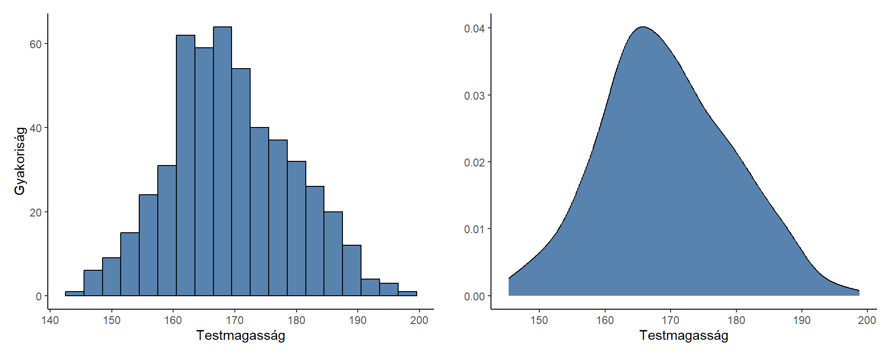
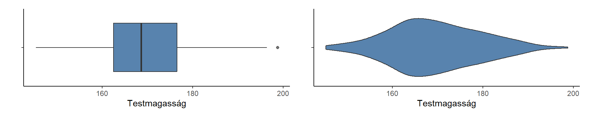
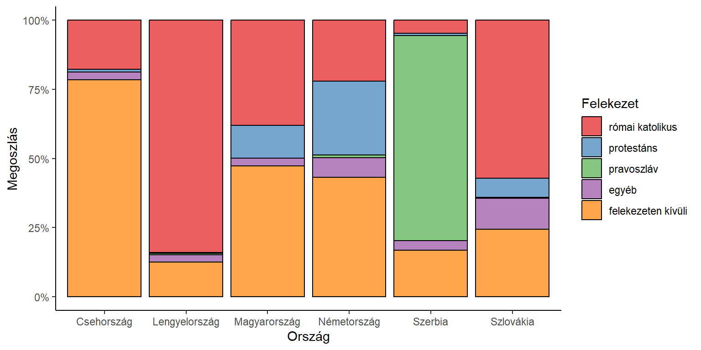
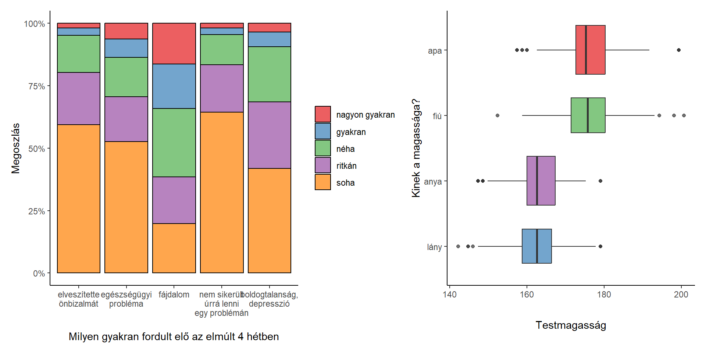

Ez az összefoglaló természetesen nem tud teljes képet adni a vizualizációban rejlő lehetőségek teljes palettájáról, csak arra vállalkozik, hogy a legfontosabb, leggyakrabban használt ábrákból mutasson néhány példát. A konkrét megvalósítás, a választott formák, színek, elrendezés függ a használt programtól is, attól is, hová szánjuk a diagrammokat (ettől függően elképzelhető, hogy fekete-fehér ábrákra lesz szükség), és hogy az adatok maguk milyenek (tehát például hány csoport van, mennyire van összefüggés, különbség a csoportok között, stb.)
Ha nominális, ordinális, vagy olyan skála mérési szintű változót szeretnénk ábrázolni, amelynek viszonylag kevés lehetséges értéke van, akkor választhatjuk a kördiagramot vagy az oszlopdiagramot.
Ha kevés kategóriánk van, akkor jól használható ábrák a kördiagramok (esetleg a középen “lyukas” fánkdiagramok).
Ha a kategóriák száma nagyobb, a kördiagram nehezen áttekinthető, ezért az oszlopdiagram hasznosabb. Oszlopdiagramnál arra vigyázzanak, hogy, ha az y tengelyen olyan adatot jelölnek, amelynek van abszolút 0 pontja, akkor a tengely 0-tól kezdódjön!
Ha a kategóriák száma túl nagy, a fenti ábrák áttekinthetetlenné válnak. Ez történik jellemzően azoknak az intervallum- vagy arányskála mérési szintű változóknak az esetében, amelyek sokféle értéket vesznek fel a mintában (pl. testmagasság, jövedelem)
A hisztogram első ránézésre oszlopdiagramnak tűnhet, de a különbség, hogy míg utóbbi esetében minden értékhez tartozik oszlop, a hisztogramokon intervallumokat használunk. Az y tengelyen jelölhetők a gyakoriságok vagy a százalékos arányok. A hisztogram alternatívája lehet a sűrűségfüggvény, amely jobban érzékelteti az eloszlás alakját.
Az alábbi ábrán egy hisztogramon (bal) és egy sűrűségfüggvények (jobb) láthatják a testmagasságok eloszlását egy 500 elemű mintában:

Szintén kedvelt diagram a dobozábra, amely a változó mediánját, alsó és felső kvartilisét és terjedelmét (beállításoktól függően a kiugró értékeket is - az ábrán a különálló pontok) mutatja. A hegedűábra a sűrűségfüggvény és a dobozábra furcsa hibridje, amely majd a több kategória összehasonlításában lesz igazán praktikus. A fenti magasság-eloszlás egy dobozábrán és egy hegedűábrán:

Ugyan egyelőre még nem foglalkoztunk azokkal a statisztikai módszerekkel, amelyek két változó összefüggését vizsgálják, érdemes már most megismerkedni azokkal a diagrammokkal, amelyekkel az ilyen összefüggések jól bemutathatók.
A legkézenfekvőbb módja az összefüggés bemutatása a halmozott oszlopdiagram, amely százalékos arányban adja meg az egyik (ha van: a független) változó kategóriáin belül a másik (függő) változó megoszlását.

A dobozábrák nem csak egy csoport vagy változó bemutatására alkalmasak, hanem használhatjuk egy változó értékeinek összevetésére több csoportban, vagy akár még arra is van lehetőség, hogy kétféle bontásban (pl. ország és nem) mutassuk be az értékeket.
A tengelyek felcserélhetők, ennek nincs jelentősége.
A hisztorgramok és sűrűségfüggvények is használhatók két vagy több (de általában nem túl sok, mert áttekinthetetlenekké válnak) csoport összehasonlítására. Az alábbi ábrák ugyanazokat az adatokat mutatják be más-más formában. Az egyik lehetőség (1. ábra), hogy a csoportok egymásra rakódnak, vagyis nem külön-külön látjuk a két csoport hisztogramját, hanem egy, a teljes mintára vonatkozó hisztogram van felosztva. Itt például látszik, hogy a magas személyek között a férfiak vannak többségben (az eloszlás jobb oldala nagyrészt kék). A másik lehetőség (2. és 3. ábra), hogy a két vagy több csoportra külön-külön készítjük a hisztogramot, amelyek átfedhetik egymást (2. ábra) vagy külön is megjeleníthetők, azonos x tengellyel (3. ábra) az összevetés érdekében. Hisztogramok helyett ebben az esetben is használhatunk empirikus sűrűségfüggvényeket.
## Warning: The `<scale>` argument of `guides()` cannot be `FALSE`. Use "none" instead as of ggplot2 3.3.4.
## This warning is displayed once every 8 hours.
## Call `lifecycle::last_lifecycle_warnings()` to see where this warning was generated.Két skála mérési szintű változó kapcsolatát felhődiagrammal (másképpen: szórásdiagram) szokás ábrázolni (angolul: scatter plot).
Ez a diagram alkalmas egy további kvalitatív szempont ábrázolására (pl. csoportok szerinti bontás vagy színezés). A két változó közötti kapcsolatot ábrázolhatjuk például a lineáris regressziós becslés egyenesével (Statisztika 2. kurzuson tanuljuk majd)
Nem mutatok be ismét minden lehetőséget, de az egy diszkrét és egy másik változó összefüggését bemutató ábrák egy másik esetben - az azonos formán mért változók megoszlásának összevetése - is jól használhatók. Ebben az esetben a diszkrét változó helyét az ábrán az veszi át, hogy melyik változóról van szó, míg a másik tengely ugyanúgy működik, tehát a diszkrét változó százalékos megoszlását vagy a folytonos változó értékeit mutatja.

A vonaldiagramot változók időbeli változásának ábrázolására szokás használni. Akárcsak az oszlopdiagramnál, arra kell figyelni, hogy ha az ábrázolt változónak van 0 pontja, akkor az y tengely a 0-tól induljon! A területdiagram ugyanerre használható, a különbség annyi, hogy a vonal alatti terület is színezve van. Utóbbi akkor hasznos, ha a teljes összeg több részből tevődik össze, amelyeket egymásra rakódva mutatunk be (ld. utolsó ábra)